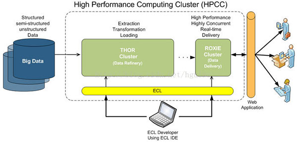
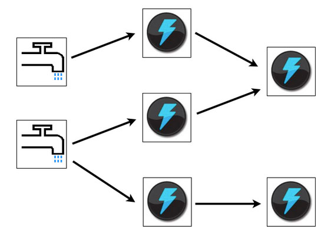
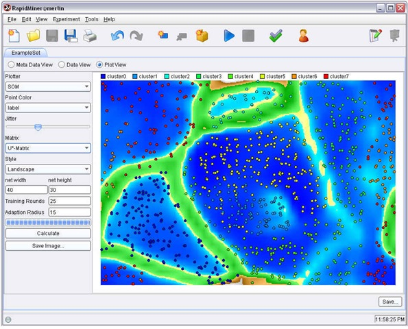
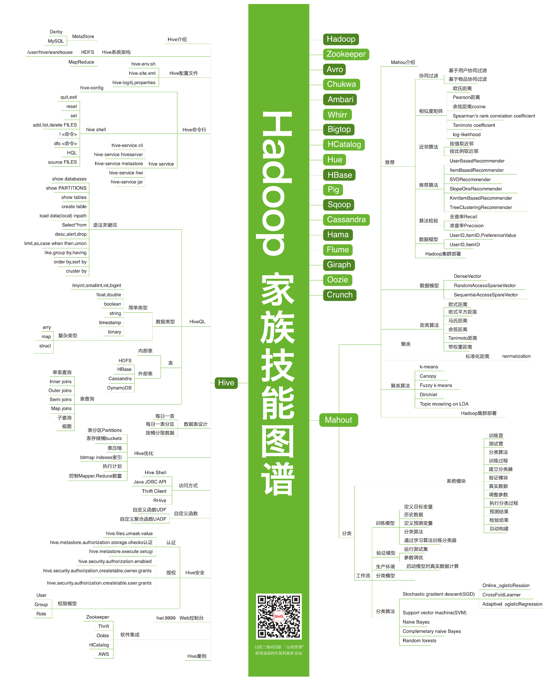

简介
大数据（big data），指无法在一定时间范围内用常规软件工具进行捕捉、管理和处理的数据集合，是需要新处理模式才能具有更强的决策力、洞察发现力和流程优化能力的海量、高增长率和多样化的信息资产。
大数据技术的战略意义不在于掌握庞大的数据信息，而在于对这些含有意义的数据进行专业化处理。换而言之，如果把大数据比作一种产业，那么这种产业实现盈利的关键，在于提高对数据的“加工能力”，通过“加工”实现数据的“增值”。
从技术上看，大数据与云计算的关系就像一枚硬币的正反面一样密不可分。大数据必然无法用单台的计算机进行处理，必须采用分布式架构。它的特色在于对海量数据进行分布式数据挖掘。但它必须依托云计算的分布式处理、分布式数据库和云存储、虚拟化技术。[2]
大数据需要特殊的技术，以有效地处理大量的容忍经过时间内的数据。适用于大数据的技术，包括大规模并行处理（MPP）数据库、数据挖掘、分布式文件系统、分布式数据库、云计算平台、互联网和可扩展的存储系统。
最小的基本单位是 bit，按顺序给出所有单位：bit、Byte、KB、MB、GB、TB、PB、EB、ZB、YB、BB、NB、DB。
- 1 Byte = 8 bit
- 1 KB = 1,024 Bytes = 8192 bit
- 1 MB = 1,024 KB = 1,048,576 Bytes
- 1 GB = 1,024 MB = 1,048,576 KB
- 1 TB = 1,024 GB = 1,048,576 MB
- 1 PB = 1,024 TB = 1,048,576 GB
- 1 EB = 1,024 PB = 1,048,576 TB
- 1 ZB = 1,024 EB = 1,048,576 PB
- 1 YB = 1,024 ZB = 1,048,576 EB
- 1 BB = 1,024 YB = 1,048,576 ZB
- 1 NB = 1,024 BB = 1,048,576 YB
- 1 DB = 1,024 NB = 1,048,576 BB
大数据是一个含义广泛的术语，是指数据集，如此庞大而复杂的，他们需要专门设计的硬件和软件工具进行处理。该数据集通常是万亿或EB的大小。这些数据集收集自各种各样的来源：传感器，气候信息，公开的信息，如杂志，报纸，文章。大数据产生的其他例子包括购买交易记录，网络日志，病历，军事监控，视频和图像档案，及大型电子商务。
在大数据和大数据分析，他们对企业的影响有一个兴趣高涨。大数据分析是研究大量的数据的过程中寻找模式，相关性和其他有用的信息，可以帮助企业更好地适应变化，并做出更明智的决策。
一、Hadoop
Hadoop 是一个能够对大量数据进行分布式处理的软件框架。但是 Hadoop 是以一种可靠、高效、可伸缩的方式进行处理的。Hadoop 是可靠的，因为它假设计算元素和存储会失败，因此它维护多个工作数据副本，确保能够针对失败的节点重新分布处理。Hadoop 是高效的，因为它以并行的方式工作，通过并行处理加快处理速度。Hadoop 还是可伸缩的，能够处理 PB 级数据。此外，Hadoop 依赖于社区服务器，因此它的成本比较低，任何人都可以使用。

Hadoop 是一个能够让用户轻松架构和使用的分布式计算平台。用户可以轻松地在 Hadoop 上开发和运行处理海量数据的应用程序。它主要有以下几个优点：
⒈高可靠性。Hadoop 按位存储和处理数据的能力值得人们信赖。
⒉高扩展性。Hadoop 是在可用的计算机集簇间分配数据并完成计算任务的，这些集簇可以方便地扩展到数以千计的节点中。
⒊高效性。Hadoop 能够在节点之间动态地移动数据，并保证各个节点的动态平衡，因此处理速度非常快。
⒋高容错性。Hadoop 能够自动保存数据的多个副本，并且能够自动将失败的任务重新分配。
Hadoop 带有用 Java 语言编写的框架，因此运行在 Linux 生产平台上是非常理想的。Hadoop 上的应用程序也可以使用其他语言编写，比如 C++。
二、HPCC
HPCC，High Performance Computing and Communications（高性能计算与通信）的缩写。1993年，由美国科学、工程、技术联邦协调理事会向国会提交了"重大挑战项目：高性能计算与 通信"的报告，也就是被称为 HPCC 计划的报告，即美国总统科学战略项目，其目的是通过加强研究与开发解决一批重要的科学与技术挑战问题。HPCC 是美国 实施信息高速公路而上实施的计划，该计划的实施将耗资百亿美元，其主要目标要达到：开发可扩展的计算系统及相关软件，以支持太位级网络传输性能，开发千兆 比特网络技术，扩展研究和教育机构及网络连接能力。

该项目主要由五部分组成：
1、高性能计算机系统（HPCS），内容包括今后几代计算机系统的研究、系统设计工具、先进的典型系统及原有系统的评价等；
2、先进软件技术与算法（ASTA），内容有巨大挑战问题的软件支撑、新算法设计、软件分支与工具、计算计算及高性能计算研究中心等；
3、国家科研与教育网格（NREN），内容有中接站及 10 亿位级传输的研究与开发；
4、基本研究与人类资源（BRHR），内容有基础研究、培训、教育及课程教材，被设计通过奖励调查者-开始的，长期 的调查在可升级的高性能计算中来增加创新意识流，通过提高教育和高性能的计算训练和通信来加大熟练的和训练有素的人员的联营，和来提供必需的基础架构来支 持这些调查和研究活动；
5、信息基础结构技术和应用（IITA ），目的在于保证美国在先进信息技术开发方面的领先地位。
三、Storm

Storm 是自由的开源软件，一个分布式的、容错的实时计算系统。Storm 可以非常可靠的处理庞大的数据流，用于处理 Hadoop 的批量数据。Storm 很简单，支持许多种编程语言，使用起来非常有趣。Storm 由 Twitter 开源而来，其它知名的应用企业包括 Groupon、淘宝、支付宝、阿里巴巴、乐元素、Admaster 等等。
Storm 有许多应用领域：实时分析、在线机器学习、不停顿的计算、分布式RPC（远过程调用协议，一种通过网络从远程计算机程序上请求服务）、 ETL（Extraction-Transformation-Loading的缩写，即数据抽取、转换和加载）等等。Storm的处理速度惊人：经测 试，每个节点每秒钟可以处理 100 万个数据元组。Storm 是可扩展、容错，很容易设置和操作。
四、Apache Drill
为了帮助企业用户寻找更为有效、加快 Hadoop 数据查询的方法， Apache软件基金会 近日发起了一项名为 "Drill" 的开源项目。Apache Drill 实现了 Google’s Dremel.
据 Hadoop 厂商 MapR Technologies公司产品经理 Tomer Shiran 介绍，"Drill" 已经作为 Apache 孵化器项目来运作，将面向全球软件工程师持续推广。
该项目将会创建出开源版本的谷歌 Dremel Hadoop 工具（谷歌使用该工具来为 Hadoop 数据分析工具的互联网应用提速）。而 "Drill" 将有助于 Hadoop 用户实现更快查询海量数据集的目的。
"Drill" 项目其实也是从谷歌的 Dremel 项目中获得灵感：该项目帮助谷歌实现海量数据集的分析处理，包括分析抓取 Web 文档、跟踪安装在 Android Market 上的应用程序数据、分析垃圾邮件、分析谷歌分布式构建系统上的测试结果等等。
通过开发 "Drill" Apache 开源项目，组织机构将有望建立 Drill 所属的 API 接口和灵活强大的体系架构，从而帮助支持广泛的数据源、数据格式和查询语言。
五、RapidMiner
RapidMiner 是世界领先的数据挖掘解决方案，在一个非常大的程度上有着先进技术。它数据挖掘任务涉及范围广泛，包括各种数据艺术，能简化数据挖掘过程的设计和评价。

功能和特点
- 免费提供数据挖掘技术和库
- 100% 用 Java 代码（可运行在操作系统）
- 数据挖掘过程简单，强大和直观
- 内部XML保证了标准化的格式来表示交换数据挖掘过程
- 可以用简单脚本语言自动进行大规模进程
- 多层次的数据视图，确保有效和透明的数据
- 图形用户界面的互动原型
- 命令行（批处理模式）自动大规模应用
- Java API（应用编程接口）
- 简单的插件和推广机制
- 强大的可视化引擎，许多尖端的高维数据的可视化建模
- 400 多个数据挖掘运营商支持
耶鲁大学已成功地应用在许多不同的应用领域，包括文本挖掘，多媒体挖掘，功能设计，数据流挖掘，集成开发的方法和分布式数据挖掘。
六、Pentaho BI
Pentaho BI 平台不同于传统的BI 产品，它是一个以流程为中心的，面向解决方案（Solution）的框架。其目的在于将一系列企业级 BI 产品、开源软件、API 等等组件集成起来，方便商务智能应用的开发。它的出现，使得一系列的面向商务智能的独立产品如 Jfree、Quartz 等等，能够集成在一起，构成一项项复杂的、完整的商务智能解决方案。
Pentaho BI 平台，Pentaho Open BI 套件的核心架构和基础，是以流程为中心的，因为其中枢控制器是一个工作流引擎。工作流引擎使用流程定义来定义在 BI 平台上执行的商业智能流程。流程可以很容易的被定制，也可以添加新的流程。BI 平台包含组件和报表，用以分析这些流程的性能。目前，Pentaho 的主要组成元素包括报表生成、分析、数据挖掘和工作流管理等等。这些组件通过 J2EE、WebService、SOAP、HTTP、Java、JavaScript、Portals 等技术集成到 Pentaho 平台中来。 Pentaho 的发行，主要以 Pentaho SDK 的形式进行。
Pentaho SDK 共包含五个部分：Pentaho 平台、Pentaho 示例数据库、可独立运行的 Pentaho 平台、Pentaho 解决方案示例和一个预先配制好的 Pentaho 网络服务器。其中 Pentaho 平台是 Pentaho 平台最主要的部分，囊括了 Pentaho 平台源代码的主体；Pentaho 数据库为 Pentaho 平台的正常运行提供的数据服务，包括配置信息、Solution 相关的信息等等，对于 Pentaho 平台来说它不是必须的，通过配置是可以用其它数据库服务取代的；可独立运行的 Pentaho 平台是 Pentaho 平台的独立运行模式的示例，它演示了如何使 Pentaho 平台在没有应用服务器支持的情况下独立运行；
Pentaho 解决方案示例是一个 Eclipse 工程，用来演示如何为 Pentaho 平台开发相关的商业智能解决方案。
Pentaho BI 平台构建于服务器，引擎和组件的基础之上。这些提供了系统的 J2EE 服务器，安全，portal，工作流，规则引擎，图表，协作，内容管理，数据集成，分析和建模功能。这些组件的大部分是基于标准的，可使用其他产品替换之。
Hadoop 简介
官方网址 -- hadoop.apache.org -- 1.0.4 版本中文文档
Hadoop 是一个由 Apache 基金会所开发的分布式系统基础架构。
用户可以在不了解分布式底层细节的情况下，开发分布式程序。充分利用集群的威力进行高速运算和存储。
Hadoop 实现了一个分布式文件系统（Hadoop Distributed File System），简称 HDFS。HDFS 有高容错性的特点，并且设计用来部署在低廉的（low-cost）硬件上；而且它提供高吞吐量（high throughput）来访问应用程序的数据，适合那些有着超大数据集（large data set）的应用程序。HDFS 放宽了（relax）POSIX 的要求，可以以流的形式访问（streaming access）文件系统中的数据。
Hadoop 的框架最核心的设计就是：HDFS 和 MapReduce。HDFS 为海量的数据提供了存储，MapReduce 则为海量的数据提供了计算。
hadoop 家族技能图谱
{kind=link}